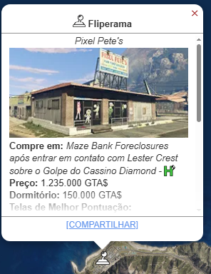
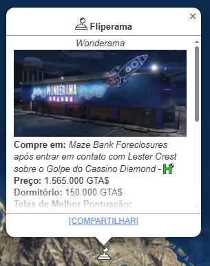
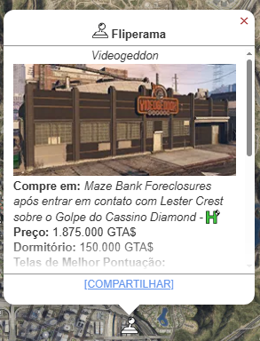
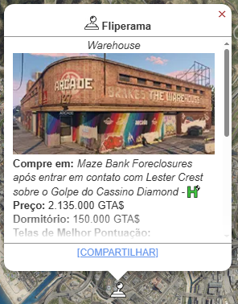
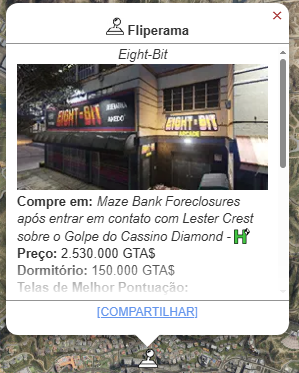

Fliperama
O Fliperama (Arcade) é um investimento fundamental introduzido na atualização The Diamond Casino Heist. Embora não seja um negócio de renda passiva tradicional, seu principal valor é atuar como o Centro de Planejamento obrigatório para executar o Golpe do Cassino (The Diamond Casino Heist).

Metodo de Obter
Você pode comprar um Fliperama (Arcade) no Maze Bank Foreclosures, que você pode acessar pelo navegador da Internet no seu smartphone. O site pode ser encontrado na aba Dinheiro e Serviços ou inserindo o seguinte URL no seu navegador: www.maze-bankforeclosures.com.
No total, existem 6 Fliperamas disponíveis para compra em Los Santos.
- Pixel Pete's: $ 1.235.000 
- Wonderama: $ 1.565.000 
- Videogeddon: $ 1.875.000 
- Warehouse: $ 2.135.000 
- Insert Coin: $ 2.345.000
- Eight-Bit: $ 2.530.000 

Melhorias e Personalizações
Terminal de Controle Mestre
- Como CEO, você terá acesso a
Armazéns de Muamba, Armazém
de veículos, Bunker, Hangar e Boate. - Como presidente do MC, você terá
acesso a todos os cinco tipos de
Negócios do Motoclube. - Com o Terminal de Controle Mestre
você pode Comprar suprimentos,
lançamento Missões de
reabastecimento e Vender missões,
adicionar atualizações de equipamentos,
e veja todas as estatísticas de todos os negócios. - Você tem acesso total para os sites do
jogo e opções de todas as empresas de
um só lugar, como se você estivesse sentado
no computador da respectiva propriedade.
Estação de Drones $ 1.460.000
- A Estação de Drones permite que você
voe drones sobre a cidade. - Os compradores também terão acesso a
um novo Nano Drone no Freemode. - Os drones vêm equipados com uma
arma de choque e um recurso de
autodestruição de emergência.
Jogos Retrô
Esta é a lista completa de jogos / gabinetes que você pode adicionar à sua propriedade Retro Arcade:
- Street Crimes: Gang Wars Edition (Grátis)
- Invade and Persuade II ($ 245.000)
- Badlands Revenge II ($ 362.500)
- Race and Chase:Street Legal ($ 410.000)
- Race an chase: Crotch Rockets ($ 385.000)
- Race and Chase: Get Truckin ($ 369.500)
- The Wizard's Ruin ($ 420.000)
- Space Monkey 3: Bananas Gone Bad ($ 360.000)
- Shiny asabi Kitty Claw ($ 295.000)
- Madam Nazar Speaks Fortune Teller ($ 315.000)
- The Love Professor ($ 261.000)
- Defender of Faith ($ 152.500)
- Monkey's Paradise ($ 90.000)
- Penetrator ($ 101.5000)
- Axe of Fury ($ 666.000)
- QUB3D ($ 333.000)
- Camhedz ($ 362.500)
Mural
- Simples (Grátis)
- Pensamento Pixelado ($ 50.500)
- Listras de Corrida ($ 56.000)
- Pulverize Para Sempre ($ 61.500)
- Então Kawaii ($ 68.000)
- Outro Reino ($ 76.000)
- Com Estrutura De Arama ($ 86.000)
- Todas as cores ($ 96.000)
- Ó Nervoso ($ 107.500)
Piso
- Simples (Grátis)
- O Laboratório ($ 78.000)
- Aumentar a Escala ($ 86.000)
- Intergaláctico ($ 94.500)
- Yay Arco-Íris ($ 104.500)
- Trovão ($ 117.000)
- Estrela Subestimadas ($ 132.000)
- Brinquedos Super Divertidos ($ 148.000)
- Primordial e Adequado ($ 165.000)
Neon Art
- Simples (Grátis)
- Emulador ($ 107.500)
- Foguete de Virilha ($ 128.000)
- Fim de Jogo ($ 149.000)
- BFFL ($ 171.000)
- Espada Poderosa ($ 201.000)
- Noites LS ($ 240.500)
- Penetrador ($ 280.000)
- Conteudo Adulto ($ 320.000)
Estilo
- Foco Total (Grátis)
- Dê um Brilho ($ 290.000)
- Hipster Exposto ($ 470.000)
Extras
- Quartos Pessoais ($ 150.000)
- Telas de Pontuação ($ 295.000)
- Garagem ($ 215.000)
Lucro
O Fliperama gera lucro de duas maneiras distintas:
▸ Lucro Principal: O Golpe do Cassino
- Função Principal: O Fliperama serve como a base de operações para todas as missões de preparação e o planejamento final do Golpe do Cassino.
- Lucro Potencial (Bruto): O Golpe do Cassino é um dos roubos mais lucrativos do jogo, com pagamento bruto que pode ultrapassar $ 3.000.000 (dependendo do alvo e do número de jogadores).
- Lucro Potencial (Bruto): O Golpe do Cassino é um dos roubos mais lucrativos do jogo, com pagamento bruto que pode ultrapassar $ 3.000.000 (dependendo do alvo e do número de jogadores).
- Frequência: Pode ser repetido rapidamente após um curto cooldown no jogo.
▸ Renda Passiva (Cofre do Fliperama)
- Rendimento: Depende da quantidade de máquinas de fliperama que você possui (o máximo é 35).
- Gestão: Não requer nenhuma missão de popularidade; basta possuir as máquinas.
- Lucro Máximo: Com o máximo de máquinas compradas, o cofre acumula $ 5.000 por dia no jogo (48 minutos reais).
O Fliperama é um investimento obrigatório (apesar de caro) no GTA Online, não pelo seu cofre, mas sim por desbloquear o Golpe do Cassino, a principal fonte de renda recorrente para o jogador que possui o Fliperama.
Assista a este guia para saber mais sobre a Boate no GTA Online. Este vídeo explica como funciona o esquema e como gerenciar.
l